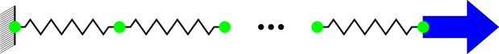
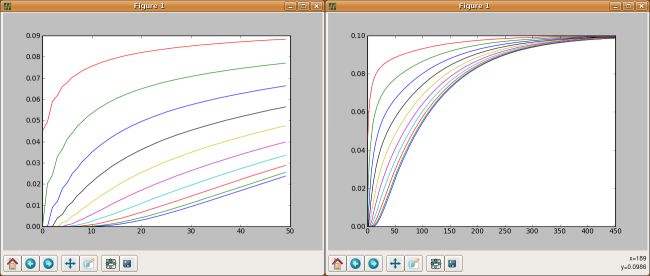

Description
This package provide a minimal simulation of mass springs system to understand the mechanical integration process. It simulates a file of springs fixed at one extremity and loaded at the other one.

Algorithms
First, a set of ponctual masses are created and positioned along the Ox axis
where NB represent the number of springs in the file and l0 is the length of a spring. Then linear springs are created that connect two neighbor points.
where K is a constant representing the stiffness of the spring. Then the integration algorithm is created. It requiers a boundary function that explain how external points interact with the rest of the world.
where "load" is the force exerced on the right most point. "deform" is the function that will actually perform the modification of the positions of points according to mechanics.
Simulation
Everything is defined in a single file, launch it using :
user@computer:$ python -i simu.py
The "-i" option is mandatory since you must interact to launch the simulation. To launch one round of simulation (50 steps plus one display) just call the "run" function.
A set of curves with the evolution of the strain of each spring will be displayed. Recall the "run" function a set of times to see the evolution of the system. By default the springs reach an equilibrium when their strain is equal to : load/K

Bugs
If you experience bugs, feel free to report them on
gforge or send a mail to the author. Thanks